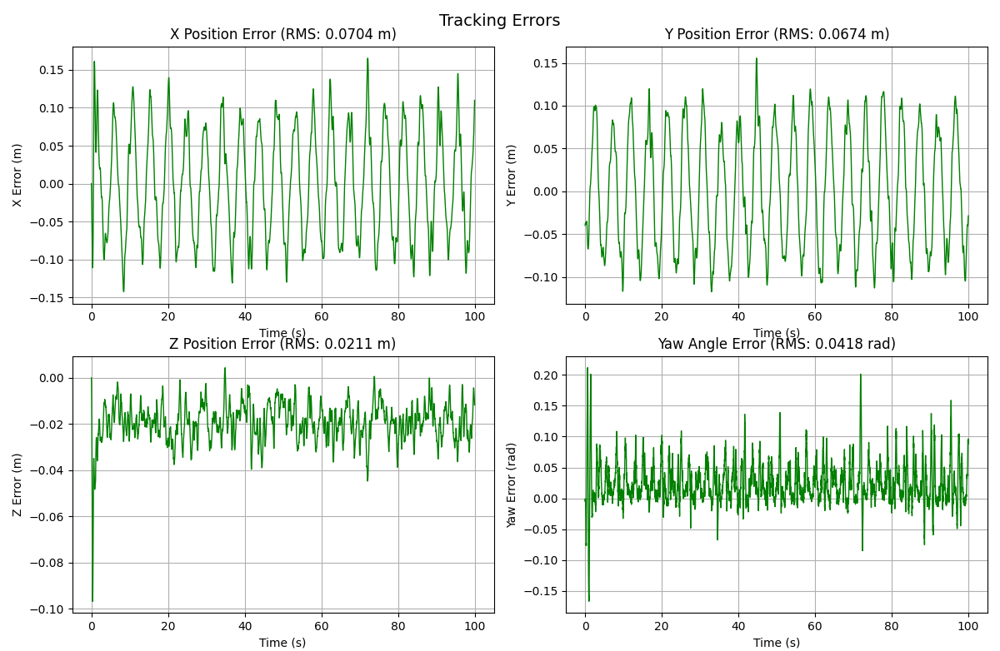
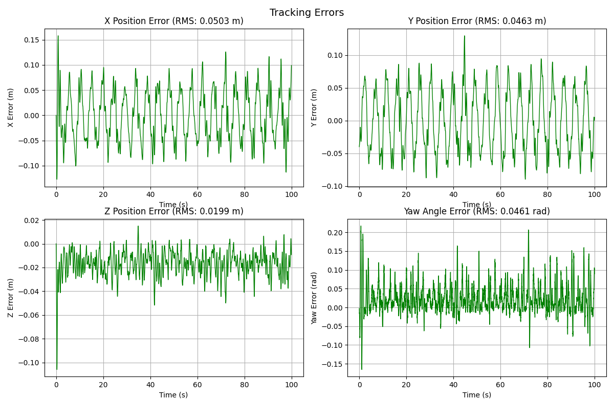

1.Controller comparison
Three position controllers were implemented and compared on the same trajectory-tracking task:
- PD: per-axis position and velocity feedback with acceleration feedforward. No model required.
- LQR: optimal state feedback on a linearized model, tuned through the Q and R weights rather than individual gains.
- MPC: a constrained quadratic program solved over a receding horizon at every control step.
The task is a 3 m-radius circle at 1 m altitude, flown at 4 m/s for 100 s (about 21 laps) in the PyBullet Crazyflie simulation. We restructured the course code so that all three controllers inherit from one base class, which converts a desired acceleration into collective thrust and an attitude command. PD and LQR supply position and velocity gains; MPC computes the acceleration command directly. A batch runner sweeps controller parameters from a YAML file and logs per-axis RMS error, maximum error, and laps completed for each run.
PD gains were selected by sweeping several hundred Kp×Kd combinations and ranking them by total tracking RMS.

Reference speed ramp
The best PD gains from the first sweep (Kp = 8, Kd = 2) gave 0.26 m RMS with a 1.3 m maximum error, dominated by the start of the run. The vehicle starts at rest while the reference circle requires 4 m/s of tangential speed from t = 0, so the controller begins with a large velocity error. We added a speed ramp: the reference angular rate increases linearly to its full value over 2 s. The reference angle is the integral of that rate (θ = ωmaxt²/2T during the ramp), and the acceleration feedforward includes the tangential term r·α as well as the centripetal term. With the ramp in place, a second sweep selected Kp = 33, Kd = 11, giving 0.076 m RMS over 21.0 laps (21.2 without the ramp).
LQR and MPC
LQR models each axis as a double integrator (state [position, velocity], input acceleration) and solves the continuous algebraic Riccati equation for one position gain and one velocity gain. The same gains are used for x and y, with an additional scale factor on z to account for gravity acting on the vertical axis. We swept 40 weightings; the best was Q = diag(200, 40), R = 0.3, with a z scale of 1.5.
MPC uses a discrete-time 3-D double integrator (six states, three acceleration inputs) and solves a quadratic program at every control step using cvxpy with the CLARABEL solver. The horizon is 20 steps of 20 ms (0.4 s), the terminal cost weight is 10× the stage cost, and the constraints limit acceleration to 10 m/s² laterally and 15 m/s² vertically and speed to 6 m/s. The first input of the solution is applied and the problem is re-solved at the next step. If the solver fails, the controller falls back to a fixed-gain PD law. We swept 31 weightings.
| Best run | Total RMS | Max error | x / y / z RMS | Laps |
|---|---|---|---|---|
| PD · Kp 8, Kd 2 · no ramp | 0.262 m | 1.300 m | 0.171 / 0.187 / 0.067 | 21.23 |
| MPC · Qpos 10 · no ramp | 0.128 m | 1.295 m | 0.050 / 0.106 / 0.050 | 21.22 |
| PD · Kp 33, Kd 11 · ramp | 0.076 m | 0.162 m | 0.055 / 0.049 / 0.016 | 21.01 |
| LQR · Q diag(200, 40), R 0.3 · ramp | 0.078 m | 0.130 m | 0.056 / 0.052 / 0.015 | 21.01 |
| MPC · R 0.2 · ramp | 0.066 m | 0.132 m | 0.044 / 0.038 / 0.031 | 21.01 |
Without the speed ramp, the maximum error exceeded 1.2 m for both PD and MPC. With the ramp, all three controllers stayed below 0.17 m, so the reference trajectory had a larger effect on the result than the choice of controller.
LQR performed about the same as tuned PD: 3% higher RMS error and 20% lower maximum error. This is expected, since LQR on a double-integrator model produces a proportional-derivative law; the difference is that the gains follow from the Q and R weights, and a competitive result was reached with 40 runs rather than several hundred.
MPC gave the lowest error, 13% below tuned PD. The improvement is in the horizontal plane (x and y RMS 20% and 22% lower), which is consistent with the 0.4 s horizon anticipating the curvature of the path. Altitude error was higher than with PD (0.031 against 0.016 m). Two changes we identified but did not test are a penalty on the rate of change of the input and a prediction model that includes attitude dynamics.


Lab 2 was completed with Dejan Plavsic and Mohsen Movahedi. The full write-up, including the geometric thrust/attitude derivation, is in the control report.
2.Target detection & localization
The vision lab required detecting ground targets in images from a quadrotor's downward-facing camera, recorded during real flights, and estimating each target's position. Detection uses a classical pipeline (grayscale conversion, adaptive thresholding with morphological cleanup, external contours, and geometric filtering), which is fast and can be inspected frame by frame.

Per-frame detections are back-projected through the camera model into the Vicon world frame, clustered per target, and averaged into position estimates with uncertainty. Each target is observed between 68 and 682 times, and the averaged estimates are at centimeter scale.


3.Visual odometry front end
Lab 4 was a stereo visual-odometry pipeline run on the KITTI city dataset, computing relative pose from frame-to-frame feature correspondences. Because the raw matches contain outliers, pose is estimated with RANSAC: hypotheses are fitted to minimal sets, scored by the number of inliers, and the best hypothesis is refitted on its inlier set. Over the ~65 m KITTI drive the estimate tracks ground truth with a mean per-frame position error of 1.23 m (cumulative RMSE 1.35 m), without loop closure.


4.Related work
The visual-odometry work led into Rinnegan, which extends relative pose estimation from one vehicle to a multi-agent factor graph.